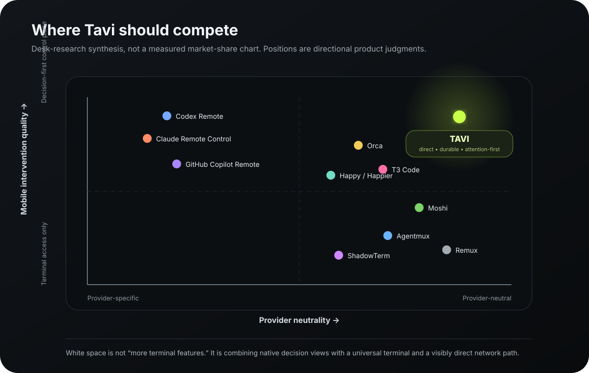
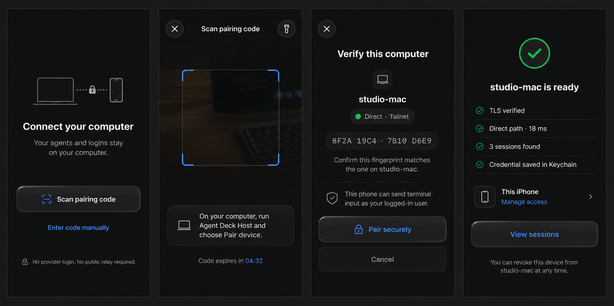
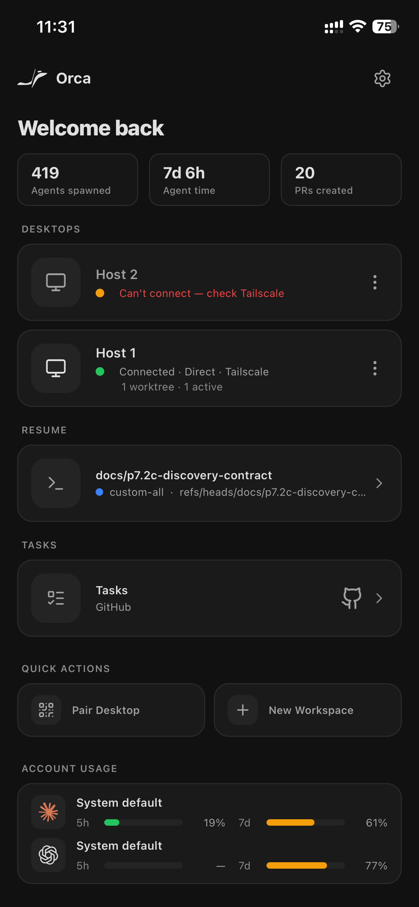
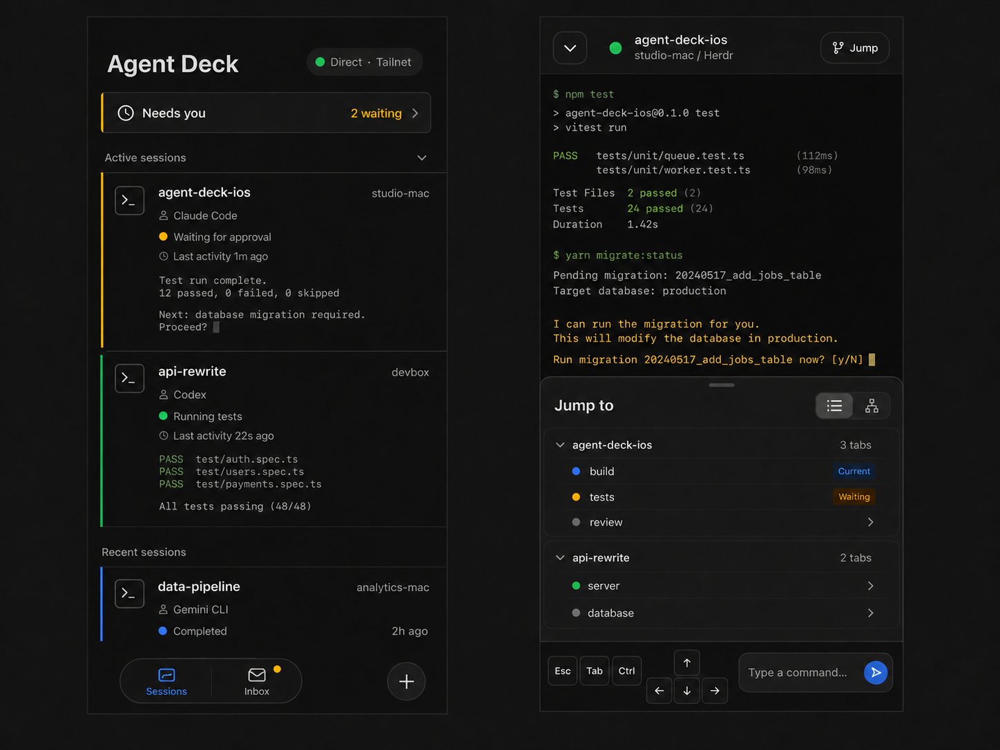
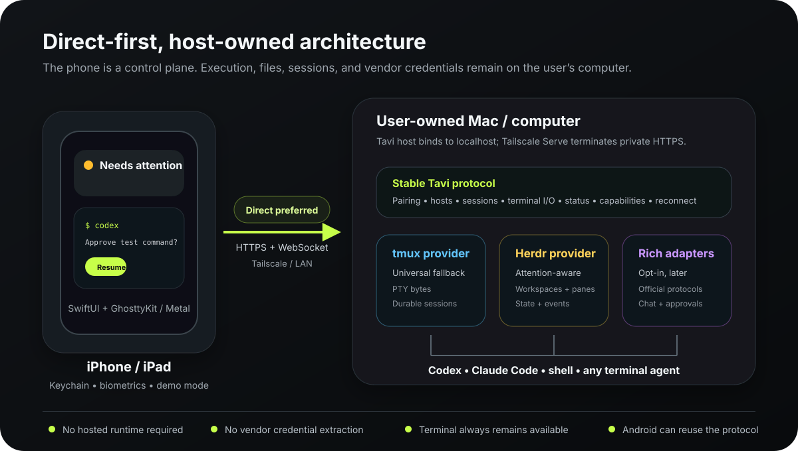
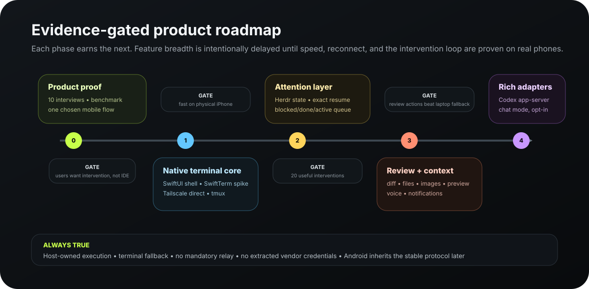

The terminal is the compatibility layer. Attention is the product.
A native terminal is necessary, but by itself it enters a mature category occupied by Moshi, Agentmux, ShadowTerm, Remux, Blink, Termius, and others. Our differentiated job is to collapse a remote coding interruption into a few seconds.
Cached home appears immediately.
Blocked and done work rises first.
Read recent, safe context.
Exact host and pane, one tap.
Prompt, approve, steer, interrupt.
Session remains on the host.
Build a provider-neutral intervention layer above durable terminals, with a full native terminal one tap away and richer provider integrations added only through documented capabilities.
Any agent. Your machine. Seconds to intervene.
Direct-network speed, durable sessions, and no mandatory cloud relay or new agent runtime.
Leave without losing control
Your phone disconnecting never owns or ends the work. tmux or Herdr does.
Credentials stay on the host
Mocha does not proxy model calls or extract provider authentication.
Remote agent work is an interruption problem, not a tiny-IDE problem.
When away from a computer, the user usually does not want to code for an hour on a phone. They want to know what changed, whether an agent is waiting, and what single action will keep work moving.
Developer or technical founder
- Runs CLI agents on a Mac, Linux host, or devbox.
- Uses existing Codex, Claude, or other subscriptions.
- Already values tmux, Herdr, SSH, or Tailscale.
- Cares about latency and lock-in more than hosted convenience.
Monitor, unblock, steer, recover
- Find the session that actually needs attention.
- Resume the exact machine, project, and pane.
- Read enough context for a safe decision.
- Survive phone lock, roaming, and network changes.
Direct Tailscale felt dramatically faster
The founder found a direct Tailscale path responsive while a product relay path was unusably laggy. Tailscale documents direct peer-to-peer connections as the lowest-latency path and relay as a fallback.
Connection path belongs in the UI
“Direct,” “peer relay,” “relay,” or “unknown” should be visible alongside latency and last-seen state. Performance must be diagnosable, not a mysterious feeling.
Three categories are converging on the same mobile control-plane idea.
The market validates the job but also raises the bar. Native vendor apps, cross-provider harnesses, and terminal-first tools now overlap on notifications, chat, files, reviews, and durable sessions.
| Category | Examples | What they prove | Opening for Mocha |
|---|---|---|---|
| Vendor-native | Codex Remote, Claude Remote Control, GitHub Copilot Remote | Native approvals, queue/steer, worktrees, attachments, review, and push are valuable. | Unify work across providers without replacing their local CLIs. |
| Harness / companion | Orca, T3 Code, Happy/Happier | One inbox and structured chat across hosts is compelling. | Avoid wrapper commands, desktop lock-in, and mandatory hosted paths. |
| Terminal-first | Moshi, Agentmux, ShadowTerm, Remux | Native terminal quality requires reconnect, multiplexers, mobile input, files, and previews. | Make attention and exact intervention—not terminal breadth—the organizing model. |

The phone is a control plane
Both vendors keep execution on the development machine and expose native steering surfaces. This confirms the mental model.
Native terminal is table stakes
Durability, terminal keys, files, links, uploads, and previews are already expected in premium mobile developer tools.
State can be honest
Lifecycle hooks, documented screen manifests, and state rollups provide a better authority model than ad-hoc transcript scraping.
Fast, private, neutral—and honest about what it knows.
Attention before inventory
Needs attention and ready to review come before host lists, usage bars, or productivity totals.
One intervention, then leave
Short, context-rich decisions are the design center. Long phone coding remains possible, not primary.
Unknown beats wrong
Every semantic state has provenance. Generic tmux sessions remain unknown unless a reliable source exists.
Direct path is a feature
Show path, latency, staleness, reconnect, and failure reason. Never hide a relay behind “connected.”
Progressive intelligence
Herdr and official provider protocols enrich the experience without becoming the universal runtime.
Terminal escape hatch
Every structured status, approval, review, or chat view can open the raw terminal immediately.
The first release must already express the wedge.
A terminal-only beta proves rendering but not the product. Release 1 needs the direct, durable, attention-first loop even if richer file and chat features come later.
- Native SwiftUI app shell and UIKit terminal view.
- QR pairing, Keychain, multiple hosts, per-device revoke.
- Tailscale/private HTTPS and WebSocket connection.
- Connection path, latency, stale, and last-seen diagnostics.
- tmux durability plus exact window/pane resume.
- Herdr workspaces, semantic state, provenance, and attach.
- Needs attention, active, recent, and unknown sections.
- Recent preview, composer, quick keys, reconnect, demo mode.
- A model router or proprietary agent runtime.
- A wrapper users must type instead of official CLIs.
- A mandatory hosted relay or Mocha account.
- A full mobile IDE and general-purpose code editor.
- Broad provider adapter parity.
- Authoritative state from arbitrary terminal scraping.
- Provider subscription/account management.
- Android development in parallel with the first iOS proof.
Borrow the proven jobs, not every competitor's scope.
Use the filters to review the recommended sequence. The complete evidence table lives in FEATURE_LANDSCAPE.md.
Tailscale Serve/private HTTPS, no public exposure, path and latency diagnostics.
Universal durability plus attention-aware workspace state.
Host → workspace/session → window/tab → pane/agent in one tap.
Composer, quick keys, live mode, copy/paste, OSC 52, links, hardware keyboard.
Hook, provider protocol, screen rule, or unknown—visible and testable.
Only from explicit events after attention state is reliable.
Read-only review, Markdown, images, PDFs, and cautious path actions.
Preview, redact if needed, confirm target directory, return remote path.
Open host-local servers without a public tunnel.
One durable session, two presentations, capability-gated with visible authority and terminal fallback.
Official local app-server for chat, approvals, history, and events; provider credentials stay in Codex.
Consider only if reconnect and direct WebSocket still fail roaming needs.
Excellent ambient surfaces after phone state and actions are trusted.
Brittle with alternate screens, redraws, prompts, secrets, and provider changes.
No Claude.ai login, OAuth copying, or routing Free/Pro/Max credentials through Mocha.
Agents spawned and total time do not answer what needs the user now.
A phone-native control surface with terminal-grade truth.
Needs attention leads
Then active, recently completed, and hosts. No giant welcome banner or vanity-stat wall.
Context before terminal
Show state provenance and bounded recent output; exact terminal is immediately available.
Composer and live mode
Deliberate multiline prompt entry plus explicit direct-key mode and mobile control row.
Stale is visible
Disable ambiguous sends, reconnect, fetch fresh state, then re-enable input.
Selective Liquid Glass
Navigation and floating controls may use material; terminal and dense content stay opaque.
Native by default
Dynamic Type around the terminal, labeled controls, contrast, Reduce Motion, hardware keyboard.
Leave the desk. Resolve one decision. Leave the phone.
The design center is a 20–60 second intervention, not a long mobile coding session. This section contains the complete journey: setup, remote return, intervention, terminal escalation, safe exit, recovery, measurements, and validation. The maintainable source also lives in CUSTOMER_JOURNEY.md.
Pair a user-owned host and discover existing durable sessions.
tmux or Herdr keeps work alive without the phone.
Open directly to trustworthy work that needs attention.
Read bounded context, freshness, and state provenance.
Approve, answer, steer, interrupt, or open the exact terminal.
Confirm the transition; the host keeps running.
| Stage | Context and goal | User question | Mocha response | Success signal |
|---|---|---|---|---|
| 1 · Prepare at the desk | Existing Codex, Claude Code, another CLI, tmux, or Herdr session; no desire to adopt a new runtime. | “Will this change how my agent runs or touch its login?” | Install the host, discover existing durable sessions, recommend Tailscale, and explain that official CLIs retain authentication and execution. | A real session appears without restart or provider-credential copying. |
| 2 · Pair the phone | User is near both devices and can verify their identity. | “Am I accidentally exposing shell access?” | Short-lived QR, matching host name and fingerprint, named per-device credential, Keychain storage, and visible revocation. | Private-path connection test finishes in under two minutes. |
| 3 · Leave the computer | Computer remains available while phone locks, disconnects, or changes networks. | “Will the process die when the app closes?” | tmux or Herdr owns lifetime; the app explicitly says it is safe to leave. | Work continues after force-close or lost phone connectivity. |
| 4 · Return from the phone | A notification arrives or the user checks progress while away, often one-handed. | “What needs me now?” | Face ID into immediate cached attention: action first, then working/recent, with host, project, agent, freshness, and connection. | Correct session identified in under five seconds. |
| 5 · Inspect before acting | User needs enough evidence to avoid answering the wrong request. | “What happened, and is this state trustworthy?” | Bounded preview, provenance, timestamp, target identity, and explicit stale or unknown state. | User can explain why the session needs them before input. |
| 6 · Make a short intervention | Approve, deny, answer, steer, interrupt, or send a short prompt. | “Can I do this without fighting a tiny terminal?” | Capability-gated action or Chat, deliberate composer, confirmation for risky actions, and visible target. | Most interventions finish without full terminal or laptop. |
| 7 · Escalate to terminal | Structured context is missing, ambiguous, or insufficient. | “Can I reach the exact real session—not a copy?” | Open the same host/session/window/pane in the native GhosttyKit terminal; terminal content stays opaque. | One tap reaches the exact PTY with no hidden second agent. |
| 8 · Leave again | The answer is sent and the user wants to return to real life. | “Did it take, and can I close this safely?” | Show fresh output or state transition; detaching never terminates the process. | Phone visit ends while work continues. |
| 9 · Recover when reality is messy | Host sleeps, path slows, network changes, or state becomes stale. | “Is my command lost, duplicated, or still pending?” | Mark stale, block ambiguous send, show path/latency, reconnect and refresh, never silently replay uncertain input. | Exact target returns or a concrete next action is explained. |
First-run journey

Open directly on QR pairing, put fingerprint and shell-access verification immediately before consent, reveal connection checks progressively during the handshake, and finish by explaining revocation and safe phone disconnect.
Explain the boundary
Your agents and their logins stay on your computer. Mocha connects to that computer.
Choose the host
The desktop host creates a short-lived pairing QR; manual entry is fallback only.
Verify identity
Match host name and fingerprint before granting shell-capable access.
Test the path
Progressively confirm identity, TLS, latency, direct/relay/unknown, and durable sessions during the handshake.
Discover work
Import tmux/Herdr sessions and label semantic state only from authoritative sources.
Practice once
Demo mode teaches inspect, act, terminal fallback, detach, and reconnect.
Finish with trust
Show the paired device name, Keychain/Face ID protection, exact revoke location, and that closing the phone does not stop work.
Mocha does not ask for Claude, ChatGPT, Codex, or other model-provider credentials. Installed official tools continue to own those accounts and sessions.
Critical recovery journeys
Truth before reassurance
Show last seen and reported cause, keep cached data visibly stale, offer retry and a short private-host checklist, and never suggest exposing a public port.
Diagnose without derailing
Show direct, peer-relay, relay, or unknown plus latency. Keep context during reconnect and put deeper troubleshooting after the intervention.
Never guess or replay
Freeze send until socket status is known, preserve unsent drafts, and never automatically replay possibly-sent terminal bytes.
Unknown is a valid state
Explain freshness and source, avoid synthesized approvals from screen scraping, and keep exact terminal resume available.
Fail closed
Clear decrypted in-memory credentials, explain the host rejection, and let the owner revoke one device without rotating all others.
Moments of truth
First remote attach
Latency and terminal fidelity establish whether the product is credible.
First attention alert
The user must understand what needs them and why Mocha believes it.
First network switch
The exact session must recover without duplicated or missing input.
First terminal fallback
The user must land in the exact live session, never a reconstructed transcript.
First security question
Local execution, provider authentication, transport, and revocation must be understandable.
Experience rules derived from the journey
- Home is an attention inbox, not an analytics dashboard.
- Cached state makes launch fast; visible freshness preserves trust.
- Every screen preserves host, project, session, and provider context.
- Structured actions are capability-gated; terminal fallback is universal.
- Liquid Glass belongs to the functional layer—navigation and controls—not terminal/code content.
- One-handed actions use large targets without hidden gestures.
- Closing, backgrounding, or losing the phone never owns or ends the process.
- Structured and terminal views are two presentations of one durable session.
Journey measurements
| Moment | Proposed measure |
|---|---|
| Pair | Median QR-to-verified-host time and pairing failure reasons. |
| Find | Median app-open to correct-session selection and mis-selection rate. |
| Understand | Percentage who can explain the requested intervention and state provenance. |
| Act | Percentage completed without laptop and without full terminal. |
| Recover | Reconnect time, duplicate-input, lost-draft, and wrong-target incidents. |
| Trust | False attention labels, revocation comprehension, and public-exposure mistakes. |
| Leave | Percentage of sub-60-second visits that resolve the intended intervention. |
Validation and assumptions
- Observe five uncoached first pairings.
- Test Codex, Claude Code, and an unknown CLI.
- Force network switching, host sleep, app termination, stale state, revoked credential, and relay path.
- Test understanding of runtime, credentials, process lifetime, and attention provenance.
- Brief interventions are more valuable than long mobile terminal use.
- Users accept a small host and Tailscale for speed/privacy.
- Attention state can be made trustworthy.
- A neutral core remains clear while Codex and Claude are first-class.
- Native system chrome improves usability without harming terminal legibility.
Structured views reduce phone friction; the native terminal preserves truth. They are two presentations of the same durable session, never two agents.
V1 visual direction is locked.
Mocha keeps Orca’s visual restraint but uses Moshi’s strongest interaction lesson: separate the active-session Home, the full terminal, and in-session Herdr navigation instead of flattening every host, workspace, tab, and pane into one dashboard.
Actionable work leads, live session previews preserve context, the terminal remains authoritative, and a native Jump to sheet handles workspace/tab switching. The compact labeled Sessions/Inbox dock and separate new-connection action are the approved bottom navigation treatment.


| Keep from Orca | Change for Mocha |
|---|---|
| Near-black canvas with quiet charcoal surfaces. | Open on actionable sessions, not “Welcome back” and aggregate statistics. |
| Large native-looking type and comfortable vertical rhythm. | Show host/project/provider/freshness only where it helps a decision. |
| One-pixel separators and borders instead of glow or heavy shadow. | Use semantic state plus text; avoid provider-colored tiles dominating the hierarchy. |
| Consistent rounded groups and large touch targets. | Move setup, usage, and secondary quick actions out of the main intervention path. |
| Simple rows with a clear title, metadata, and trailing action. | Open a focused request detail before terminal when authoritative context exists. |
| Calm monochrome iconography. | Use native SF Symbols and system navigation behavior rather than custom concept-art controls. |
Home screen anatomy
Mocha + health
Compact title, aggregate connection indicator, and settings. No greeting or hero treatment.
Needs attention
Compact rows with session, project, provider, reason, freshness, and a clear disclosure action.
Active sessions
Working, done, idle, and unknown sessions grouped without preview text unless expanded.
Hosts
Online/offline, direct/relay/unknown, latency, and last seen. Host management stays secondary.
Compact native dock
A labeled Sessions/Inbox glass capsule plus a separate new-connection action. Hosts and settings remain contextual rather than permanent peer tabs.
Session screen anatomy
Request detail
- Host, project, agent, and freshness remain visible.
- Recent context is bounded and readable.
- Approve, deny, answer, or steer uses native controls.
- Open Terminal is always explicit.
Terminal
- Opaque near-black Ghostty surface.
- No glass over terminal output.
- Compact mobile control row and multiline composer.
- Native Jump to sheet presents Herdr workspaces and tabs without leaving the terminal.
- Reconnect and stale state occupy native bars, not content overlays.
Visual rules
Near-black, not gradient
Quiet system-black foundation. No aurora backgrounds, bloom, environmental glow, or colored haze.
Flat and softly separated
Charcoal grouping, subtle border, little or no shadow. One radius system; no floating glass content cards.
System font, strong hierarchy
Large title where useful, compact uppercase section labels, readable row titles, subdued metadata.
Mostly monochrome
Green, amber, red, and tint appear only for connection, intervention state, and selected actions.
System chrome only
The native tab bar, toolbar, menus, and transient controls receive the current iOS material automatically.
Quiet and functional
Native push, sheet, disclosure, status-change, and reconnect transitions. No parallax card deck or ornamental morphing.
The locked image is the visual implementation target for Home and Terminal. SwiftUI work should preserve its hierarchy while translating generated surfaces into real system navigation, materials, typography, accessibility, and safe-area behavior.
Two roots. One focused terminal.
The bottom dock contains Sessions and Inbox. The separate New action creates work or pairs another computer. Hosts and Settings stay contextual, while the terminal becomes a full-screen surface shared by every entry path.
Pairing replaces the shell until one host is trusted. Request detail is a focused destination. Terminal is presented at the app root, so Home, Inbox, notifications, and new-session flows can activate the same exact target without creating duplicates.
| Entry | Primary destination | Next surfaces | Return behavior |
|---|---|---|---|
| First launch | Connect → Scan → Verify → Checks → Ready | Sessions Home | Pairing state is replaced by the main shell after trust succeeds. |
| Sessions | Needs you, Active, Recent | Request detail or exact Terminal | Terminal minimize returns to the originating root without stopping work. |
| Inbox | Unresolved events, resolved history | Request detail → Terminal fallback | Back preserves Inbox position and event state. |
| New | Pair computer or create terminal session | Pairing or exact Terminal | Dismiss returns to the unchanged root. |
| Connection health | Host switcher sheet | Host detail, Diagnostics, Paired devices, Settings | Management stays contextual; it is not a permanent tab. |
| Terminal | Opaque Ghostty surface | Jump to workspace/tab or session/window/pane | Back/minimize detaches the phone presentation only. |
| Notification | Request detail when trustworthy | Exact Terminal when terminal-only | Authenticate, refresh, reuse matching target, never duplicate. |
Surface groups
Launch + Pairing
Privacy gate, Connect, QR/manual, Verify, progressive checks, and Ready.
Sessions + Inbox
Only persistent destinations. Needs-you summary can switch directly into the filtered Inbox.
Request + Terminal
Trustworthy context first when available; exact terminal remains the universal path.
New + Hosts + Jump
Native sheets preserve the underlying task and disappear after a choice.
Host + Settings
Diagnostics, credentials, security, terminal controls, privacy, demo, and support.
Stale + Reconnect + Revoked
Existing screens change state; they do not dump the user into a separate error maze.
Non-negotiable route behavior
One exact target
Host, provider, server session, workspace/window, tab, and pane identify a route. Reopen means reuse.
Navigation never kills work
Back, minimize, tab switching, backgrounding, and phone disconnect never terminate the host process.
Restore before input
Herdr refocuses the parked workspace/tab before the terminal accepts typing.
Structured only when known
Request detail needs authoritative capability and freshness; otherwise open Terminal.
Never replay uncertain bytes
Ambiguous input freezes sending until the exact target is resynchronized.
Keep V1 small
No permanent Hosts/Settings tabs, provider login, Files, Git, Preview, or required Chat surface.
Keep execution local. Stabilize one small protocol.
The existing host bridge is a useful asset. The native app should first consume it, while the host evolves into capability-based tmux, Herdr, and future provider adapters.

| Layer | Decision | Why |
|---|---|---|
| iOS UI | SwiftUI · iOS 26+ | Native navigation, system surfaces, accessibility, and Keychain/biometrics; iPhone first, with iPad optimization planned later. |
| Terminal | UIKit-hosted GhosttyKit + Metal | Moshi and Remux validate the native performance pattern; Mocha owns a pinned XCFramework and small reviewable patch set. |
| Terminal contingency | SwiftTerm only for a release blocker | Preserves an escape hatch without planning a costly renderer migration after v1. |
| Transport | HTTPS + WebSocket over Tailscale/private network | Current proof works and is fast; host can expose structured capabilities beyond SSH. |
| Durability | tmux and Herdr | Phone connection never owns process lifetime. |
| Rich Codex | Official app-server locally, V1.1 | Provides rich events and approvals; use stdio/Unix locally and map it through the Mocha host. |
Chat without becoming a model proxy
Terminal and Chat are sibling views of the same durable session. The active adapter advertises what it can do; unsupported or ambiguous content falls back visibly to the terminal. The complete compliance and capability contract lives in CHAT_UI_AND_AGENT_ARCHITECTURE.md.
Official rich-client route
Run Codex app-server locally, identify Mocha honestly, keep ChatGPT/API authentication inside Codex, and normalize threads, turns, tools, approvals, and events through our host.
Terminal first; API key for product integration
The official CLI may remain authenticated locally for terminal control. Mocha never offers Claude.ai login. A fully structured adapter uses a Claude Console API key or supported cloud provider kept on the host.
| Experience | Authority | Authentication boundary | Product rule |
|---|---|---|---|
| Any agent | PTY terminal | Official CLI owns its login | Universal Ghostty terminal; no provider code required. |
| Codex Chat | Official app-server | Supported Codex sign-in stays on host | Recommended first structured adapter. |
| Claude enhanced terminal | PTY + documented hooks | Official Claude Code CLI owns subscription login | No token access; local projection requires review and visible labeling. |
| Claude structured adapter | Agent SDK / structured mode | API key or supported cloud provider on host | No third-party Claude.ai login or subscription routing. |
Feature Codex and Claude Code in onboarding, templates, compatibility tests, and accurate session identity. Keep navigation, storage, transport, and capability rendering provider-neutral so every terminal agent still works.
Pairing grants shell access. Design like it.
The absence of a central cloud does not make the product automatically safe. A device credential can control commands as the logged-in user, so identity, revocation, TLS, and clear boundaries are first-release requirements.
Single-use bootstrap
QR contains a short-lived secret. The app exchanges it for a named, revocable, per-device credential.
Keychain + Face ID
Credentials never enter ordinary preferences; optional biometric gates protect app open and sensitive actions.
Localhost by default
Tailscale Serve/private TLS fronts the service. Never recommend Funnel or raw public port exposure.
No credential extraction
Official CLIs authenticate locally. No Claude.ai login or subscription routing. Rich adapters use permitted documented interfaces and can be disabled.
Private by default
No terminal text in notifications, diagnostics, or analytics unless the user explicitly opts into a safe action.
High-impact confirmation
Uploads, session destruction, and commands outside an attached terminal get explicit target confirmation.
Build now with a free team. Design reviewability from day one.
Not required to write code
Apple allows personal-device testing through Xcode's free Personal Team, with provisioning limits and periodic reinstall. Paid membership is required for TestFlight and App Store distribution.
Generic developer tool, user-owned hosts
No provider account creation or software catalog. Supply a full demo mode because App Review cannot depend on a private Mac and tailnet.
Adopt it selectively because a native, current-platform app is the right product choice—not because every terminal surface should become translucent.
Earn breadth through measured reliability.

Product and benchmark prep
Translate the locked V1 visual target into native tokens and flows, install Xcode, record a terminal corpus, and document protocol capabilities.
Ghostty terminal qualification
Pinned GhosttyKit/Metal, remote I/O, write batching, one tmux session, lifecycle stress, and real network switching.
Protocol and providers
Versioned capabilities, stable target IDs, tmux provider, Herdr provider, event provenance.
Pairing and app shell
QR bootstrap, Keychain, hosts, dashboard, diagnostics, settings, offline demo.
Intervention loop
Attention ordering, recent context, exact resume, composer, quick keys, dogfood metrics.
Context, ambient, rich adapters
Notifications, Live Activities, diffs, files, preview, voice, then official provider adapters.
Measure whether the phone prevented a laptop interruption.
10 developer interviews
Recent behavior across vendor-native, tmux, Herdr, and general SSH workflows—not speculative wish lists.
5 target users
Can they identify the next session within five seconds and explain why it needs them?
Real phones and bad networks
Pinned GhosttyKit against the recorded terminal corpus; Wi-Fi, cellular, direct, relay, background, lock/unlock, surface teardown, and host sleep.
The hardest parts are trust, renderer quality, and scope.
| Risk | Consequence | Mitigation |
|---|---|---|
| Crowded category | Generic terminal features do not differentiate. | Attention + exact resume + direct performance; validate before breadth. |
| False state | One incorrect blocked/done label destroys trust. | Herdr/hooks/official protocols, provenance, unknown by default. |
| GhosttyKit ownership | Evolving embedded APIs and Metal lifecycle defects may require downstream fixes. | Pinned reproducible XCFramework, isolated adapter, small patch set, recorded corpus, and physical-device stress qualification. |
| Security blast radius | Stolen credentials become shell access. | Per-device keys, Keychain, biometrics, revoke, TLS, ACL guidance. |
| Provider churn | Rich adapters break or create terms risk. | Documented interfaces only; capability flag, conformance tests, terminal fallback. |
| App Review ambiguity | Private host dependency is difficult for reviewers. | Fully featured demo mode, generic terminal positioning, detailed notes/video. |
| Relay fallback | Some networks cannot form a fast direct path. | Path diagnostics, peer-relay guidance, reconnect/backpressure; optional service only if proven necessary. |
Primary public evidence reviewed.
Capabilities change quickly. This baseline is dated 19 August 2026 and should be refreshed before provider-adapter or App Store work.
- OpenAI — Mastering remote engineering work from your phone
- OpenAI — Codex app-server
- OpenAI — Codex authentication
- Anthropic — Claude Code Remote Control
- Anthropic — Claude Code legal and compliance
- Anthropic — Claude Code authentication
- Anthropic — Claude Code hooks
- GitHub — Copilot remote control
- Orca — Mobile companion
- T3 Code repository
- Happy repository
- Moshi documentation
- Moshi — Ghostty/Metal terminal-engine explanation
- Moshi App Store release history
- Agentmux App Store
- ShadowTerm App Store
- Remux repository
- Herdr agent status and rollups
- Herdr socket API
- SwiftTerm repository
- Ghostty architecture and libghostty status
- Mosh mobile shell
- Tailscale connection types
- Tailscale Serve
- Apple App Review Guidelines
- Apple developer account overview
- Apple — Adopting Liquid Glass